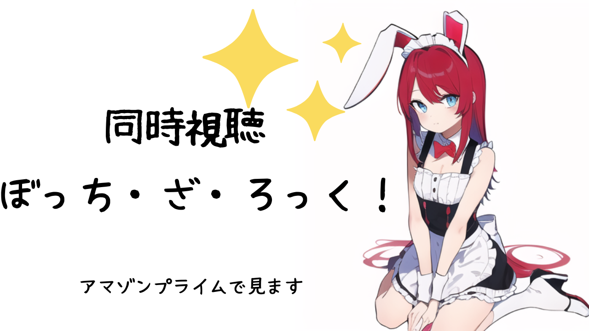

自己紹介
- 名前:逢沢れお(vtuberやってます!)
- 年齢:16歳の設定
- 誕生日:ハロウィン(10月31日)
- 好きな食べ物:うどん
- 好きなアニメ:アイカツ!
- 好きなアニメキャラ:大空あかり
- 好きな歌:Clumsy thoughts
- トレードマーク:うさぎ
- 特技:走ること
- イメージカラー:赤と紫
今週の予定
| 4月4日(月) 22:00~ | ぼっち・ざ・ろっく 同時視聴 |
| 4月5日(火) 22:00~ | 歌枠 |
| 4月6日(水) 22:00~ | |
| 4月7日(木) 22:00~ | |
| 4月8日(金) 22:00~ | |
| 4月9日(土) 22:00~ | |
| 4月10日(日) 22:00~ |
今週のスケジュール
喋りのボイチェンのコツを掴む
ツェッテルカステンのルールを守る
今日の配信の感想
2023.4.3 Mon

ぼっち・ざ・ろっくがずっと気になっていた
Twitterで話題になっていたアニメでずっと気になっていました
私のAmazonプライムが4月4日までだったので、
これは見ないといけないと当日に企画を思いつきました
喜多ちゃんが一番好きだった
陽キャと陰キャの対比がされていて陰キャあるあるのネタが多かったです
自分が陰キャだから共感するものが多かったです
ボーカルの喜多ちゃんは陽キャの代表でとにかく真っ直ぐな明るいキャラでした
声の高さやルックス、私服も好みでした
一方で主人公のぼっちちゃんは陰キャでした
陰キャで魅力的なキャラを作るのは難しいと思うのですが、
主人公のぼっちちゃんは発想が斜め上で面白くとても魅力的でした
顔芸が得意でした
ギターを弾きたくなってきた
昔買ったギターを引っ張り出して弾きたくなってきました
久しぶりにアニメ見たんですが面白かったです
深夜の2時までお付き合いありがとうございました